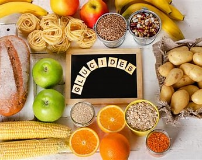

Les glucides, constituent la principale source d’énergie du corps. Ils permettent d’alimenter les muscles pendant l’entraînement et d’éviter les baisses de performance. Une bonne gestion des glucides aide à maintenir l’endurance et l’intensité de l’effort.

- Riz complet – 2.5g protéines / 100g
- Pâtes complètes – 5g protéines / 100g
- Quinoa – 4g protéines / 100g
- Patate douce – 2g protéines / 100g
- Flocons d’avoine – 13g protéines / 100g
- Pain complet – 9g protéines / 100g
- Banane – 1g protéines / 100g
- Pois chiches – 8g protéines / 100g
- Semoule – 3g protéines / 100g
- Maïs – 3g protéines / 100g